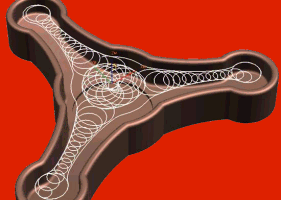

|
Yüksek
Hýzda Ýþleme Kavramý:
Türkiye'de son yýllarda oldukça artan bir iþleme teknolojisi
olan Yüksek Hýzda Ýþleme yeni gibi görünmesine karþýn aslýnda
baþlangýcý 1920'lere dayanmaktadýr.1924 yýlýnda Dr. Carl Salomon
tarafýndan bulunup 1931 yýlýnda da patenti alýnmýþtýr. Ýlerleyen
yýllarda da Amerikan Hava Kuvvetleri tarafýndan geliþtirilmeye
baþlanmýþtýr.
Yüksek
hýzda iþleme, genel olarak freze takýmlarýyla, yüksek devir
ve ilerlemelerle iþleme yapmaktýr. Bu iþleme tekniði geniþ
pasolar ve büyük takýmlarla talaþ kaldýrma yerine düþük pasolar
ve küçük takýmlarla iþleme yapýlmasýna olanak tanýr. Birim
zamanda kaldýrýlan talaþ miktarý daha az olmasýna karþýn toplam
süreçte iþleme sürelerinin %30, hatta daha da fazla kýsalmasýný
saðlamaktadýr. Ayný zamanda polisaj iþlemine bile gerek duyulmayacak
þekilde yüzey kalitelerinin de elde edilmesini saðladýðý da
görülmektedir.
Kaliteli, yüksek alaþýmlý ve serleþtirilmiþ çeliklerin iþlenmesinde
uygun olarak kullanýlabilir (60-63 HRC). Bu kadar yüksek sertlikteki
çeliklerin iþlenmesinde takým seçimi çok önemlidir.
Uygulama
alaný olarak dövme kalýplarý, plastik kalýplarý, þiþirme kalýplarý,
grafit ve bakýr elektrot iþleme, otomotiv, havacýlýk ve uzay
sanayi örnek gösterilebilir.
Yüksek
hýzda iþleme yapabilmek için gerekli olan en önemli unsurlarýn
baþýnda bu iþe uygun bir tezgâh ve yüksek hýzda frezelemeye
uygun takým yolu üretebilecek bir CAM programý gelmektedir.
Tezgâhta
aranacak özellikler ise:
- Yüksek
termal stabilite, rijit bir yapýya sahip olmasý ve titreþimlerin
minimum olmasý,
- Tezgâha
veri akýþýnýn kesintisiz olarak saðlanabilir durumda olmasý
(Flash bellek ya da tezgâh üzerinde bulunan sabit disk yardýmýyla).DNC
kullanýlacak ise aktarým hýzýnýn (Baud Rate) kontrol ünitesinin
kodlarý iþleme hýzýndan yavaþ olmamasý,
- Tezgâhýn
kontrol ünitesinde geliþmiþ look-ahead özelliðinin bulunmasý
(Super-GI, HPCC vs.),
- Özellikle
formlu yüzeylerin iþlemesinde yüzeye en yakýn geometrinin
hýzlý ve doðru biçimde elde edilebilmesi için NURBS özelliðinin
kullanýlabilir durumda olmasý ve CAM programýnýn buna uygun
NC kod üretebilmesi,
- Min
10000 rpm Spindle devri
- Min
22 kW Spindle gücü
- Programlanabilir
ilerleme olarak 40-60 m/dak
- 90
m/dak'a yakýn rapid hýz.
- 1-20
ms satýr iþleme hýzý
- Spindle
içerisinden hava/soðutma sývýsý verebilme
Unigraphics NX ve Yüksek Hýzda Ýþleme:
NX/CAM,
iþlevsellik olarak yüksek hýzda iþleme tekniklerine uygun
takým yollarý üretebilmekte ve 0.001mm ve daha düþük toleranslarla
iþleme yapabilmektedir. Unigraphics NX içerisinde kaba ve
finiþ operasyonlarý için yüksek hýzda iþleme için birçok deðiþik
özellik bulunmaktadýr.
Trochoidal
Ýþleme Yöntemi:
Yüksek
Hýzda Ýþleme için en önemli özellik kaldýrýlan talaþ hacmini
sabit tutmaktýr. Kaldýrýlan talaþ hacmini sabit tutabilmek
için NX/CAM kaba iþlemelerde Trochoidal Cutting seçeneði sunmaktadýr.
- Sabit
talaþ kaldýrma oraný saðlar. Yüksek hýzda iþleme yapabilmek
için bu çok önemlidir. Kaldýrýlan talaþ hacminin sabit olduðu
düþünülerek yapýlan takým ömrü hesabý çok daha gerçeðe yakýndýr.
- Takým
yollarý arasýndaki geçiþ hareketleri dairesel olduðu için
iþ miline binen yük azalýr.
- Deðiþken
trochoidal yan adýmlar sayesinde köþeler ve dar bölgeler
daha kolay ve efektif iþlenir.
Köþelerde
Yavaþlatma Ve Köþe Yuvarlatmalarý:
Yüksek
hýzda iþleme yaparken dikkat edilmesi gereken en önemli konulardan
birisi de keskin ve ani hareketlerden kaçýnmaktýr. Takým yüksek
hýzlarla kesim yaparken oluþabilecek ani hareketler hem tezgâha
hem de takýma zarar vermektedir. Bundan kaçýnmak için keskin
köþeli takým yollarýna yuvarlatma ve yavaþlama verebilmelidir.
Çoðu tezgâhta köþelerde yavaþlama seçeneði kontrol ünitesinin
ek bir özelliði olmasýna karþýn, eski tezgâhlarda bulunmamaktadýr.
Bu durumda ise devreye CAM yazýlýmý girmektedir.
- Köþelerde
yavaþlatma yaparken de ayarlanabilecek parametreler þunlardýr:
- Yavaþlatmanýn
köþeden ne kadar geride baþlayacaðý
- Hangi
hýz deðerine inileceði
- Belirlenen
hýz deðerine kaç adýmda inileceði
Ýþleme
Toleranslarý
Intol/Outol
Özellikle
finiþ operasyonlarda düþük toleranslarla çalýþmak gereklidir.
0.001mm tolerans verildiði taktirde takým yolunun hesaplama
süresi uzayacaktýr ancak elde edilecek olan yüzey kalitesi
çok artacaktýr. Kullanýlacak deðerin en fazla 0.005 olmasý
önerilir.
Bu kýsýmda Intol için 0.00 (sýfýr), Outol için ise 0.005 deðeri
de kullanýlabilir.
Contour
Area / On Part Takým Yolu
Özellikle
yüzey finiþi iþlemelerinde kullanýlan "On Part"
takým yolu parçanýn tüm yüzeyleri üzerinde eþit yan adým aralýðý
ile birlikte sabit talaþ kaldýrma oraný ve homojen bir yüzey
finiþi saðlar.
Z-Level
Plus (Gap Machining)
Standart
Z-level iþlemelerine ek olarak yataya yaklaþýlan bölgelerde
de ek takým yollarý oluþturur. Bu operasyonun kullaným yerleri:
-
Bazý parçalarda tek seferde finiþ atmak için kullanýlabilir.
- Homojen
stok saðlayabildiði için yarý finiþ operasyonlarýnda kullanýlabilir.
Surface
Area - Helical Drive Method
Yine
finiþ iþlemlerinde kullanýlan yöntemlerden biri olan Surface
Area yönteminde Drive Method olarak Helical seçildiði taktirde
seçilen yönde takým hiç kalkmadan helisel bir kesim yapabilmektedir.
CAM
Sisteminden Beklenenler
Machining
Data Library - Kesme Metodu Veritabaný
Yazýlýmýn,
kullanýcýnýn teorik ve pratik, tecrübeye dayalý elde etmiþ
olduðu bilgilerini girebileceði, programýn belirli iþ parçasý,
takým malzemesi ya da seçilen metoda göre hýz, kesme derinliði
gibi bilgiler alabileceði bir kütüphanesinin bulundurmasý
gerekmektedir. Bu özellik otomasyon saðlamakta çok iyi bir
çözümdür. NX/CAM kullanýcýya sadece iþlemek istediði parçanýn
malzemesini, takýmýn malzemesini ve kaba, yarý finiþ ya da
finiþ metotlarýndan birini seçmesi halinde:
-
Ýþ Milinin Devri
- Kesme
Hýzlarý
- Kesme
Derinliði
- Yan
Adým
gibi
parametreleri otomatik olarak verebilmektedir.
Yüksek
Hýzda Kesim Yaparken Bilinmesi Gereken Temel Noktalar:
1.
Sabit Talaþ Hacmi - Kaldýrýlan talaþ hacmini sabit ya da sabite
çok yakýn hale getirmek gerekir. Bunu yapmak için yana kayma
hareketlerinin deðerlerine dikkat etmek gerekmektedir.
2. Yumuþak Takým Hareketi - Yüksek hýzlarda takýmýn keskin
ve ani geçiþler yapmamasýný saðlamak gerekir. Keskin takým
yollarýnýn köþeleri yuvarlatýlmalý ve takým geçiþleri bu bölgelerde
yapmalýdýr.
3. Dýþ köþelerde de iç köþelerde olduðu gibi takým yollarýnýn
köþeleri yuvarlatýlmalýdýr.
4. Derin diþi ve cep iþlemelerinde farklý uzunluklara sahip
farklý takýmlar efektif olarak kullanýlmalýdýr. Kýsa takýmlar
uzun takýmlara göre daha rijit olduklarýndan derin ceplerde
daha iyi kesme yaparlar.
5. Kaba pasolarda 5-10 derecelik helisel giriþ, yari finiþ
ya da finiþ pasolarda ise dairesel giriþ tercih edilmelidir.
6. Finiþ iþleme yaparken scallop yüksekliðini minimumda tutmak
gerekir. Bu deðeri 0.001mm civarýnda, kesim toleranslarý 0.001-0.005
arasýnda ayarlamak yüzey kalitesini çok etkileyecektir.
7. Çok ince duvarlý kalýplarýn iþlenmesinde kabada da finiþte
de yöntem olarak Level-First kullanýlmalýdýr. Duvarlarýn ayný
dijitliðe sahip olmasýný saðlamak için bu gereklidir.
8. Parçalarýn finiþini yaparken Tek seferde finiþ atmak yerine
bölgelere ayýrýp o bölgeye en uygun formda iþleme yöntemi
seçmek gerekir.
Not:
Bu yazýnýn daha fazla resim içeren tamamýný okumak için: www.ucgenyazilim.com/HSM.doc
(2,1 MB)
Hazýrlayan:
Cem ALPAY / Üçgen Yazýlým
Hakkýmýzda:
Üçgen Yazýlým Danýþmanlýk 2005 yýlýnda imalat sektörüne komple
çözümler sunmak amacýyla kurulmuþtur.
Firmamýz
CAD/CAM/CAE (Bilgisayar Destekli Tasarým, Ýmalat ve Mühendislik)
yazýlýmlarýnýn satýþ, eðitim, destek ve danýþmanlýk hizmetleri
ile birlikte imalata yönelik teknolojik donanýmlar ve bilgisayar
satýþý konularýnda faaliyet göstermektedir. CAx yazýlýmý ve
donaným alanlarýnda dünya pazarýndaki en kaliteli ve en önde
gelen ürünleri müþterilerine sunan firmamýz, danýþmanlýk ve
servis hizmetlerinde de ayný kaliteyi saðlamayý kendisine
ilke edinmiþtir.
Üçgen Yazýlým, Boðaziçi Yazýlým A.Þ.'nin ve 3355 Biliþim Sistemleri
Ltd. Þti.'nin yetkili bölge bayisidir.
Ýrtibat:
Üçgen
Yazýlým Danýþmanlýk Bilgisayar ve Makina San. Tic. Ltd. Þti.
Poyraz Sok. Sadýkoðlu Ýþ Merkezi 2 Kat:1 Daire:14 Tuðlacýbaþý
Kadýköy Ýstanbul
Tel : (216) 550 52 06
Faks: (216) 550 52 07
www.ucgenyazilim.com
|